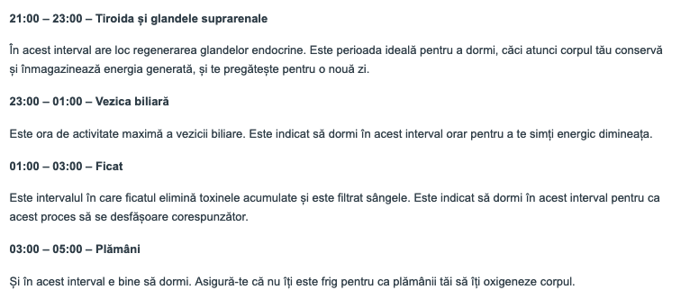

Ce se întâmplă cu corpul tău la nivel energetic dacă scrii prea mult cod?
by Adrian Harabulă on 16 February, 2020
Statul la calculator are și efecte nu neapărat benefice, tocmai de aceea ar trebui măcar să fim conștienți ele, și cum ne-ar putea afecta. O zi de lucru, are cam 8-9 ore de stat la calculator, depinde de la om la om, cât poate fiecare. Uneori mai sari mesele de prânz și nu te ridici decât dacă ai nevoie la toaletă. Și mai rău, unele zile sunt super lungi și ajungi să stai 12-14 ore la serviciu, cu ochii ațintiți spre monitor.
Vederea
Așa că fără prea multe adaosuri, vederea în primul rând este primul lucru care se belește. Vrând nevrând dacă exagerezi te vei trezi că ai nevoie de ochelari. Datorită încordării excesive asupra unui singur punct pentru ore întregi, privirea se rigidizează și nu mai poți focaliza aproape sau la distanță.
Mintea
Odată cu vederea, alt lucru ce se încordează excesiv este mintea. Ești atent acolo la ce faci, ore întregi, fără să faci prea multe pauze. Mintea obosește și ea, uneori atât de tare încât începi să te simți străin în propriul corp și nu e bine deloc, pentru că așa rămâi fără protecție, slăbește foarte tare organismul. Dacă apare o inflamație, sau o durere, mintea e prea ocupată cu ce lucrezi ca să observe inflamația așa că o ignori îndeajuns de mult încât problema să se agraveze și să îți dai seama mult prea târziu de ea, deși semne au fost acolo întotdeauna, dar ai fost prea ocupat ca să le observi.
Corpul, în general
După cum e și poza, atunci când lucrezi prea mult la serviciu, organismul tău slăbește și trece în mod de supraviețuire, închizând centrii importanți: Câmpul din jurul corpului se restrânge, asta înseamnă un sistem imunitar mai scăzut ce permite o vulnerabilitate mai mare a organismului la răceli, gripe și o stare slăbită în general, de exemplu va fi mult mai ușor ca persoanele din jur să îți încalce limitele. De asemenea mintea începe să se oprească, ca la orice burnout, la un moment dat mintea se prăjește și cedează să te mai asculte. Nu mai cooperează. Se închide.
Desigur, efectele sunt reversibile, și dacă stai câteva zile liniștit, corpul se reface singur, dar în mod ideal nu ar trebui să ajungi să te sacrifici atât de tare. În primul rând, în viața de programator trebuie să înveți să îți dozezi energia. Dacă reușești asta, nu va trebui o zi să muncești peste măsură, decât dacă chiar te simți în stare de la prea multă energie pe care o ai.
Atunci când te consumi, și ajungi să iei din rezervele organismului energie, e ca și cum faci un credit la bancă, nota de plată tot vine la un moment dat, și vine cu dobândă. De aceea, de fiecare dată când exagerezi, ar trebui să pui cel puțin atât cât ai folosit la loc.
Coloana
Alt lucru ce se poate strica de la stat prea mult la calculator este coloana. Este foarte ușor să te cocoșezi la monitor, sau să stai strâmb și e foarte ușor să faci asta fără să îți dai seama, pentru că tu ești atent la calculator, nu la poziția pe care o ai la calculator și așa trece timpul, problema de poziție se agravează și îți dai seama mult prea târziu când coloana este deja afectată.
Digestia
Alt obicei întâlnit la lucrul la calculator, este băutul de cafea. O cafea ar fi ok, dar de cele mai multe ori bei două, trei, mai și sari o masă ziua respectivă și uite așa îți supra soliciți sistemul digestiv. Îți dai seama că ai băut prea multă cafea când începe să îți miroasă gura. Atunci e semn că ficatul scoate flăcări. Alte efecte bune de observat sunt oboseala, deși cafeaua ar trebui să te revitalizeze, defapt doar agită mintea și apoi oricum te simți mai obosit decât erai înainte. Toate astea se pot verifica în analize. Dar în primul rând tu ar trebui să fii cel care să observi efectele, pe propria piele. Tot legat de digestie, pe la birou, rareori mănânci mâncare sănătoasă, deobicei bagi ceva fast-food, nu ești atent cât ar trebui la mâncarea pe care o mănânci, pentru că iarăși tu ești ocupat cu problemele pe care le rezolvi, și uite așa trec anii și ignori chestii de bază de care ar trebui să te ocupi fără să faci rabat.
Somnul
Nu în ultimul rând ce mai are de suferit dacă ești programator este somnul. Nu numai că toată ziua lucrezi, dar uneori faci asta și noaptea. Uneori stai până seara târziu, până pe la 2, 3, 4 dimineața. În primul rând somnul acela de la 4 dimineața nu e deloc odihnitor. Organismul are și el un ceas, și dacă îl sari se dereglează. Acest ceas arată cam așa, și pentru fiecare 2 ore ale zilei există un organ care e preponderent mai activ, după cum urmează: După acest ceas, orele ideale pentru dormit ar fi:  Sursa text poze: https://herbagetica.ro/blog/ceasul-chinezesc-al-organelor/
Pe lângă astea, când te pui la somn, ca programator uneori e foarte greu să adormi, pentru că toată ziua ai muncit cu mintea și ea încă rămâne turată la maxim, chiar și la sfârșitul zilei. În timp, vei învăța să dai shutdown la minte la nevoie. Un simplu trick este dormitul cu picioarele la aer, fără șosete. Aceasta va păcăli mintea se ducă la picioare și gândurile excesive își vor pierde din esență și așa vei adormi. Desigur, nu trebuie să mă crezi pe cuvânt, încearcă și găsește pe cont propriu diverse lucruri care să meargă.
De ce e așa greu cu sănătatea?
Pentru că fiind atent la calculator majoritatea zilei este foarte ușor să ignori aspecte de care ar trebui să te ocupi. Nu poți nici să te ocupi de toate odată, și e de la sine înțeles că dacă bagi mai tare o vreme la serviciu, acea vreme vei face niște sacrificii, dar e foarte important să fii conștient și de adevăratul preț al acestor sacrificii, pentru că la un moment dat nota de plată tot va veni, și nu are rost să faci sacrificii inutile. E greu, dar trebuie să te ocupi să fii în parametrii optimi în timpul serviciului. Dacă rămâi în urmă cu sănătatea, la un moment dat, se va agrava atât de tare situația încât vei fi nevoit să îți iei pauză de la serviciu cu zilele și cu forța și atunci chiar nu e plăcut.